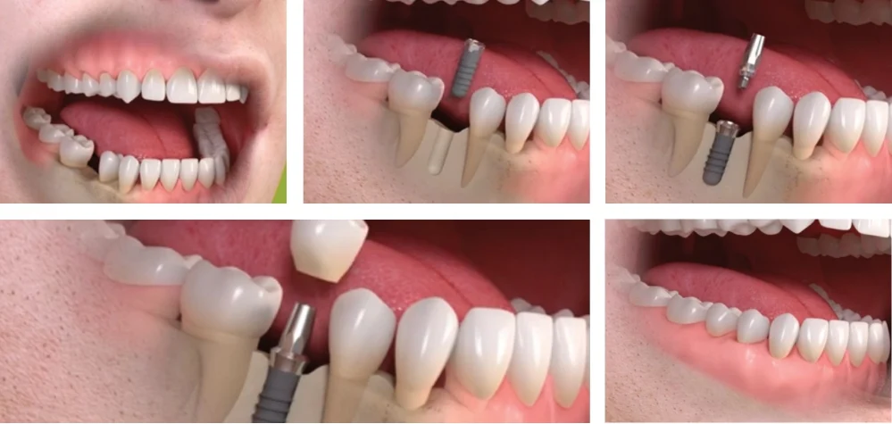

Dental Implants
Implants are substitutes for lost teeth. In this procedure, there is no need to cut down the adjacent teeth for crowns to support a bridge. Instead, dental implants replace the missing teeth by placing artificial roots directly into the jawbone, offering a more reliable and natural solution without affecting neighboring teeth.
Designed for toothless areas, this treatment involves implanting artificial dental roots made of titanium, a biocompatible metal that integrates with the jawbone, providing a natural feel and aesthetic satisfaction. This procedure is safe and offers a better alternative to traditional bridges or dentures, as it doesn't require altering the adjacent teeth. The placement of an implant requires a small operation carried out under local anesthesia, similar to that used for tooth extractions. Dental implants can support various dental prostheses, such as crowns, implant-supported bridges, or dentures, and they can also serve as anchors for orthodontic tooth movement. The use of dental implants enables unidirectional tooth movement without the reciprocal action that occurs with traditional braces.

Implant supported denture and bridge
Implant-supported dentures are a permanent solution when all teeth are missing. They are fixed, prevent bone resorption, and provide a natural appearance without altering taste sensations. When a single tooth is missing, one implant is sufficient to fill the space and restore a tooth similar to your natural teeth.
An implant for a single missing tooth eliminates the need to cut down adjacent teeth for a bridge. Unlike bridges, which rely on the health of surrounding teeth, implants last a lifetime. As more teeth are lost with age, existing implants can support fixed complete dentures. Traditional dentures often cause discomfort and difficulties in eating or speaking due to movement, whereas implant-supported teeth remain stable. Additionally, implants integrate with the bone, preventing bone loss—unlike crowns and bridges—thus delaying visible signs of aging.
Time Required
It takes a minimum of 6 months to complete the implant procedure as it is performed in two stages. First, the implant is placed in the jaw and left to bond with the bone for complete healing. This process takes at least 3 months for the lower jaw and 6 months for the upper jaw.
A temporary crown is placed during the healing phase until the permanent crown is fixed. Once the implant has fully integrated with the bone, the final replacement tooth is securely attached to the implant.
Advantages
There are several advantages to dental implants. An implant used to replace a single tooth avoids the need to cut down the adjacent teeth for crowns to support a bridge.
Additionally, implants serve a lifetime, unlike bridges, which depend on the health of adjacent teeth. Implants integrate into the bone, preventing bone loss, unlike crowns and bridges, thus delaying the signs of aging.
Implants are a safe, well-established, tried, and tested treatment.
They provide an aesthetically perfect solution for missing teeth.
Cleaning around an implant-supported tooth is as simple as cleaning a natural tooth.
FAQ's
Would implants be right for me?
First, you should decide whether implants could be right for you. Contact us to arrange an implant consultation and discussion, and we will let you know the treatment options.
Are implants safe? How long will they last?
Implants are a well-established, tried-and-tested treatment. Generally, we say an implant would last for a lifetime, but it also depends on the changes in your bone.
I have some of my own teeth. Can I still have implants?
Yes. You can have any number of teeth replaced with implants – from one single tooth to a complete set.
Can implants always be used to replace missing teeth?
It depends on the state of the bone in your jaw. Your dentist will arrange for a special radiograph to assess the amount of bone still there. If there is not enough, or if it isn’t healthy enough, grafting or placing of bone may be required prior to placing implants in that area first.
Do implants hurt?
Placing the implants requires a small operation. This will be carried out under local anesthesia, the same as for the removal of teeth. You will not feel any pain at the time, but you may feel some discomfort during the week following the surgery. This is usually due to stitches and the normal healing process, which can be relieved by the prescribed medication.
Can I have the new teeth straight away?
No. The implants need to bond (integrate) with the bone after they have been placed. This takes at least 3 months in the lower jaw and 6 months in the upper jaw. If you are having one, two, or three teeth replaced, you will have a temporary restoration in the meantime. If you have complete dentures, then you can wear them throughout the healing period once they have been adjusted after surgery.
How long does treatment take?
It takes up to 6 months from the initial assessment to the time when the artificial teeth or dentures are finally attached to the implants. However, if only the lower jaw is involved, it may take around 5 months. A lot depends on how complicated your treatment is. Your dentist will be able to give you a timetable once the surgery has been done. In the meantime, immediate loading teeth or temporary crowns are placed.
Are the teeth difficult to clean?
Cleaning around the teeth attached to the implants is no more difficult than cleaning natural teeth. However, you’ll be shown methods to help keep your implant area clean and healthy.
If I had gum disease when I had my own teeth, will I get it with the teeth attached to the implants?
Only if you don’t care for them well enough. If you keep them clean, then you should not have any problems.
Can I take the teeth out if they are fixed to implants?
Most artificial teeth attached to implants can only be placed and removed by the dentist. However, if you have complete dentures fixed to the implants by bars, you’ll be able to take them out for cleaning.
Do I have an implant for each missing tooth?
No, unless you’re only having a single tooth replaced. Normally, four to six implants are used to replace all the teeth in one jaw, as each implant can usually support two teeth. For a few missing teeth, two or three implants may be sufficient.
What happens if the implant does not bond (integrate) with the bone?
This happens very rarely. If the implant becomes loose during the healing period or just after, it is easily removed, and healing takes place in the normal way. Once the jaw has healed, another implant can be placed, or the dentist can make a bridge using the implanted false teeth that have ‘taken’.
Is the treatment expensive?
Unfortunately, yes. However, in many situations, the cost of the treatment is only a little more than the cost of more conventional treatments with crowns and bridges.